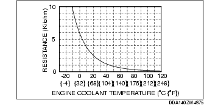
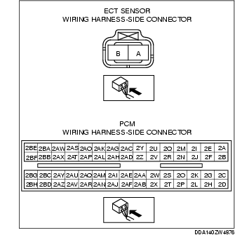

Engine coolant temperature (ECT) sensor inspection [ZY]
- • Before performing the following inspection, make sure to follow the procedure as indicated in the troubleshooting flowchart. (See Troubleshooting Procedure.)
Continuity Inspection
1. Disconnect the ECT sensor connector.
2. Remove the ECT sensor. (See ENGINE COOLANT TEMPERATURE (ECT) SENSOR REMOVAL/INSTALLATION [ZY].)
3. Place the ECT sensor in the water and while increasing water temperature, measure the resistance between terminals A and B.
- • If not within the specification, replace the ECT sensor. (See ENGINE COOLANT TEMPERATURE (ECT) SENSOR REMOVAL/INSTALLATION [ZY].)
- • If the monitor item condition/specification (reference) is not within the specification, even though there is no malfunction, perform the "Circuit Open/Short Inspection".
ECT sensor resistance
ECT sensor characteristics graph (reference)

Circuit Open/Short Inspection
1. Remove the PCM connector cover.
2. Disconnect the PCM connector. (See INTAKE-AIR SYSTEM REMOVAL/INSTALLATION [ZY].)
3. Inspect the following wiring harness for open or short circuit (Continuity inspection).

Open circuit
- • If there is no continuity, the circuit is open. Repair or replace the wiring harness.
- - ECT sensor terminal A and PCM terminal 2AC
- - ECT sensor terminal B and PCM terminal 2J
Short circuit
- • If there is continuity, the circuit is shorted. Repair or replace the wiring harness.
- - ECT sensor terminal A and power supply
- - ECT sensor terminal A and body GND
- - ECT sensor terminal B and power supply